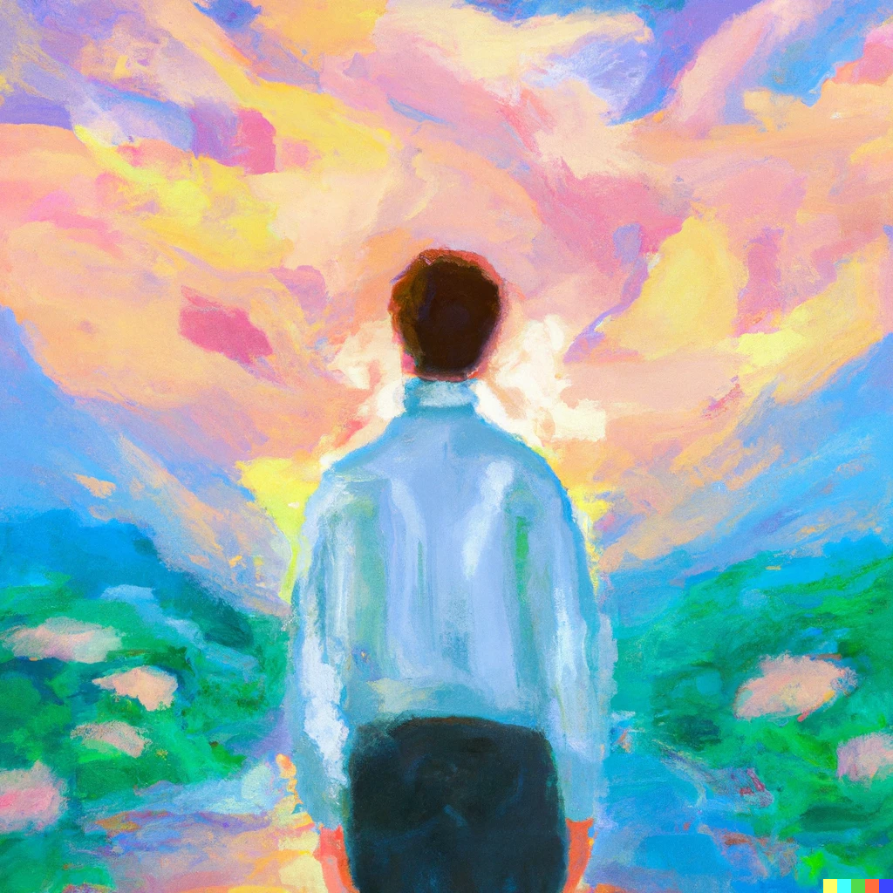

Looking Forward to 2023
It’s one year from now. December 2023. The goals and habits you were hoping to achieve and build during the year didn’t happen. What is the most likely reason you failed?

For me? Easy — I probably failed because of a lack of focus, too much time wasted on the internet, and it’s likely my planning sucked.
To make sure I don’t make those mistakes, I want to crystallize 3 things for myself:
- What I will focus on in 2023
- Some concrete goals
- Day-to-day changes I want to make
Areas of Focus
I like having narrow fields of focus — if you’re focused on too many things, are you focused on anything at all?
Here are my 3 areas of focus for 2023:
🏋🏻♀️ Health
My health is okay, but historically, I have never thrown myself fully into improving it proactively. This year, I want to err on the side of being overly obsessed with how I feel and how much effort I put into my health.
🧑🏻💻 Career
The only carry-forward area from last year — I like working on my career as if it was just another side-project. I’m fortunate enough to have a job which gives me a generous amount of autonomy, and this year, the aim is to ensure I make the most of the opportunities I get.
After all, if I don’t do it, it won’t happen.
✍🏻 Writing
In 2022, I largely ignored my role as a content producer for this website. There was one (ONE!) new blog post, and a poorly maintained tech blog that saw no activity after one (ONE!) very fun to write post. In 2023, writing takes a front seat. I love it, and it teaches me a lot. More content on the website!
Concrete goals
No ‘planning for the next year’ post is complete without a set of some concrete goals. Here are (some of) mine:
🥅 India trip:
COVID and visa complications meant I haven’t visited India since 2019. This year, we go!
🥅 Driver’s license:
I do not have a driver’s license, but I’m working on it! I now have a permit and have begun practicing. The goal is to give my behind-the-wheel test sometime in Q2, and finally get this weight off my back.
🥅 50 total pieces of content:
Given that Frndship Time makes >30 pieces of content every year, if I am able to push out 20 posts on the website this year, this seems like a reasonable goal. 50 is a nice round number, and it’d be a nice milestone.
What do I change day-to-day?
All this big picture thinking is great, but I want to make sure it isn’t just words.
I need to change some parts of how I operate day-to-day to make sure I follow through on my intentions.
Here’s a list of changes that will have the biggest impact on my wellbeing next year:
- No more infinity pools: “I want my attention back,” and I spent far too much of 2022 wasting away on the internet. For next year, I want to step away entirely from websites that end up offering bite-sized content with no end in sight. This leads me to the next change…
- Consume more longform content: podcasts, long articles, audiobooks, books, and good TV shows are so much more enjoyable than a series of YouTube videos. They’re better thought out, are long enough that I need to be intentional about having them in my schedule, and much more rewarding.
- More diligent planning: I’m not a good planner. Inaccurate estimations of how much I can do, and not spending enough time deciding how I’m going to complete long and complex projects really holds me back. I’m actively thinking about this and planning my months, weeks, and days better this year. A big shoutout to Things, Day One, and Linear — apps that make my life much more manageable.
- Do more of what I enjoy: Leaving behind all the infinity pools frees up a lot of time, and I want to spend it doing things I actually enjoy. Gaming, sports, writing, cooking, more social events — everything is fair game.
- Explore: This is different from the rest. For the last year, I’ve had my nose close to the ground and not tried to explore other things that I might enjoy. For 2022, this was a great decision, but I know there is more out there — I don’t know how I will do this in 2023, but I like having it on the front of my mind.
And that’s it! Onto 2023 — and here’s a question for you: